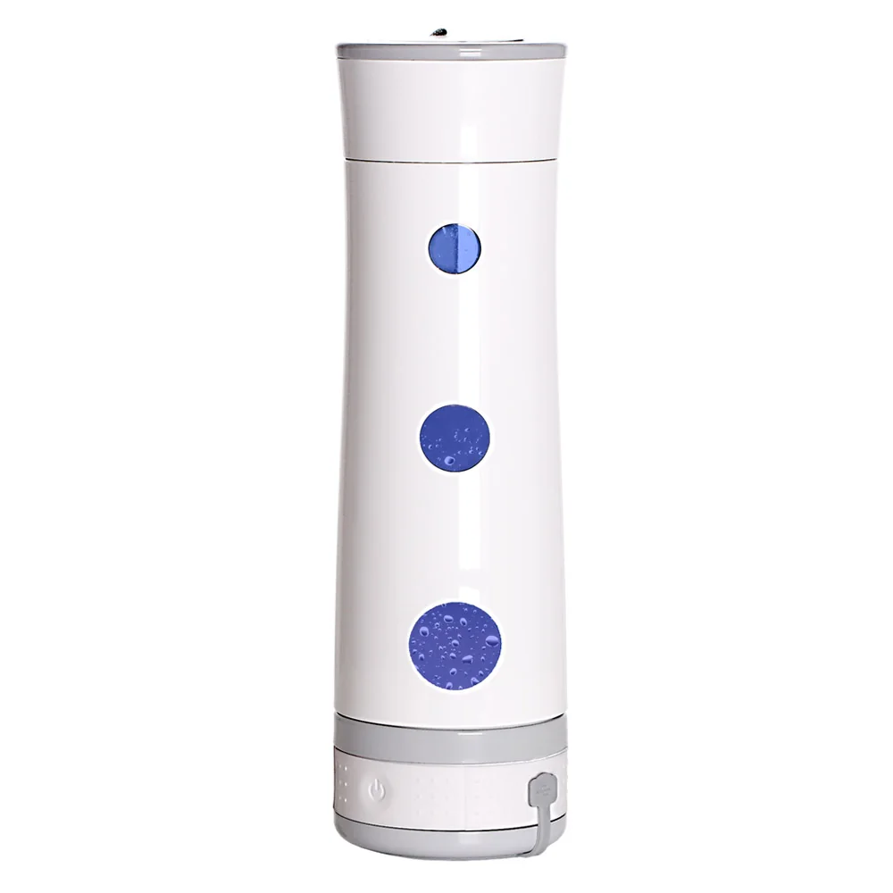

Hydrogen Bottles
Bela Aqua Hydrogen Trinkflasche
Hydrogen Trinkflasche: Wasseraufbereitungssystem von Bela Aqua mit den auf der offiziellen Produktseite veröffentlichten Leistungs-, Filter- und Ausstattungsdaten.
97,00 €
Technische Daten
| Produktart | Tragbare Wasserstoff-Trinkflasche |
| Inhalt | 450 ml |
| Gewicht | 318 g |
| Wasserstoffkonzentration | > 600 bis 1.000 ppb |
| Technologie | SPE / PEM |
| Aufbereitungszeit | Ca. 5 Minuten |
| Ladegerät | DC 5 V / 1 A; USB-Ladekabel enthalten |
| Ladezeit | 2–3 Stunden |
| Akkukapazität | Ca. 1.000 mAh |
| Abmessungen | 70 × 70 × 240 mm |
| Material | BPA-/BPS-freier Kunststoff |
| Bedienung | Ein-Tasten-Bedienung; Powerbutton 3 Sekunden halten |
| Anzeige | Integrierter LED-Farbwechsel während der Ionisierung |
| Artikelnummer | HG0001 |
Beschreibung
Hydrogen Trinkflasche: Wasseraufbereitungssystem von Bela Aqua mit den auf der offiziellen Produktseite veröffentlichten Leistungs-, Filter- und Ausstattungsdaten.
Datenhinweis
Preis, Bild und technische Angaben stammen von der verlinkten offiziellen Produktseite. Varianten und Verfügbarkeit können sich ändern.